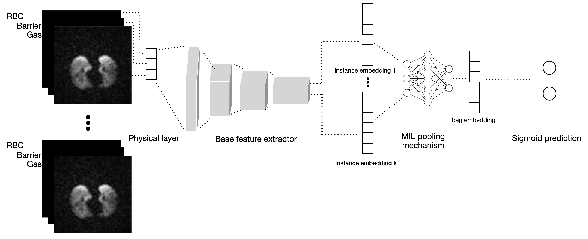

| Paper PDF |

|
Hyperpolarized (HP) gas exchange imaging is a novel technique that is able to assess regional pulmonary function of the lung[1]. It is able to characterize between diseases such as chronic obstructive pulmonary disease and left heart failure[5]. We investigate the feasibility of building a convolutional neural network (CNN) machine learning model to classify between non-specific interstitial pneumonia (NSIP) or interstitial pulmonary fibrosis (IPF) in HP gas images. In particular, we employ transfer learning with multiple instance learning. With 5-fold cross validation, a high validation accuracy is achieved but more must be validated to assess the generalizability of the model. |
|
|
| Paper: |
Code and Data:
|